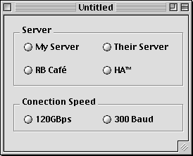
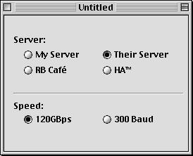

In DR2r37, a great new feature was added: the ByVal and ByRef keywords. These keywords, whcih will be familiar to any VB user, allow you to control how a parameter is passed to a method. Usually, this method would give you an error saying that it's "expecting an lvalue":
Sub DoSomething(s as string)
s="Hello!"
End Sub
It gives you this error because you're not allowed to directly modify a parameter. This is because they're passed by their value. RB has no idea which variable s actually represents; it just knows its value. However, if we change the routine to this:
Sub DoSomething(ByRef s as string)
s="Hello!"
End Sub
Then we don't get an error! S is now passed to DoSomething as a variable, not a value (specifically, it's passed BY REFerence, thus ByRef). This means that we can treat it like any normal variable, including changing its value.
ByVal is still the default, but ByRef is a welcome feature.
If you've ever worked with the RadioButton control, you know that it's a major pain. Only one can be selected at once, unless you add ugly looking frames to your window, like so:

However, this grouping system also works if the frames are invisible (sort of like tab panels–see "Tabs, but no panels"). So, if we make both of the frames invisible, we could make a nicer interface–like this:

Sure, your window may look ugly in the editor, but the finished work is much nicer, and that's all that really matters.